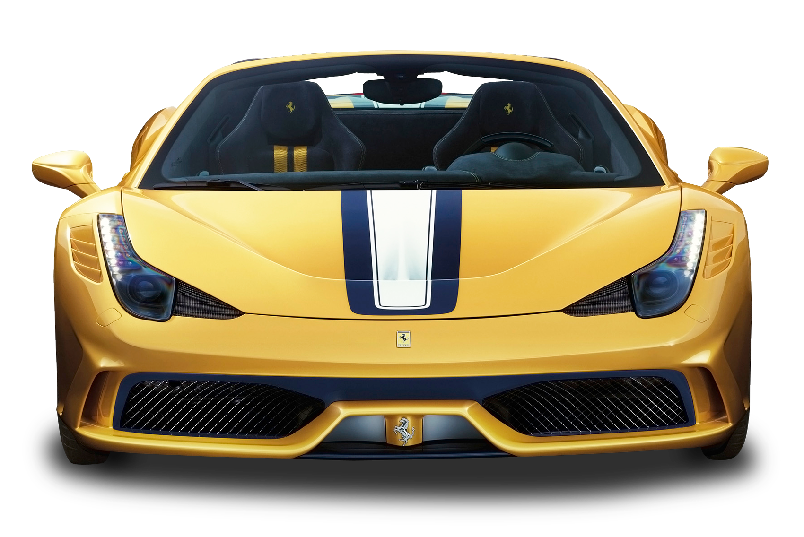
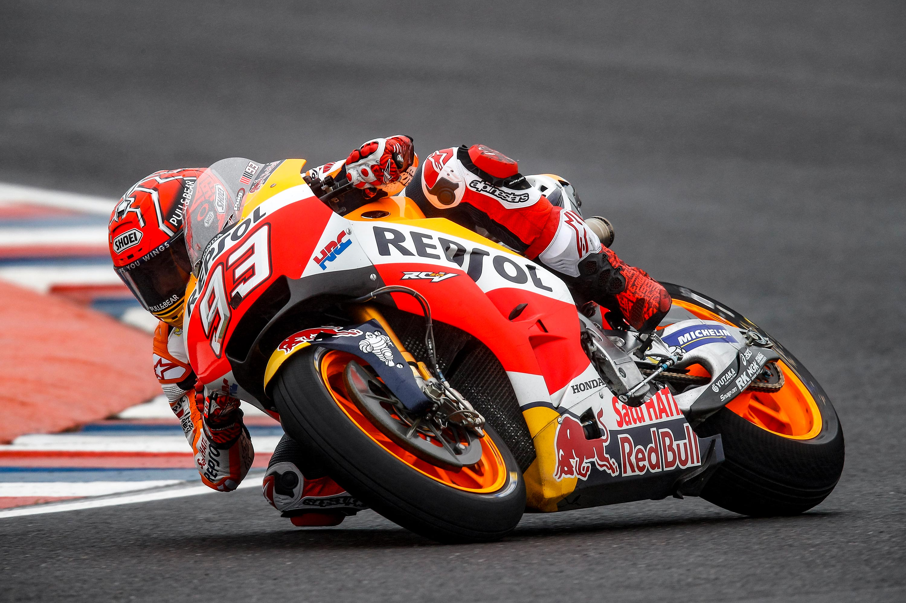
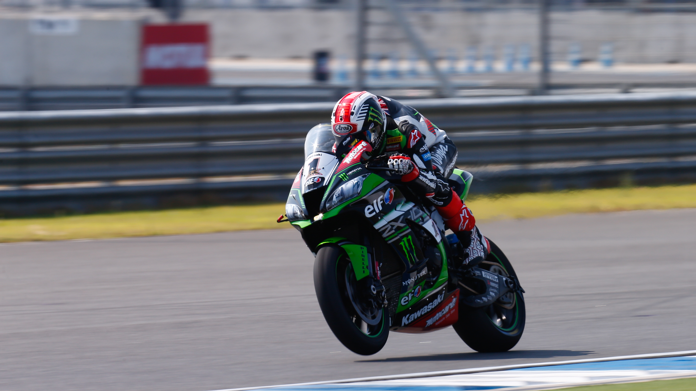
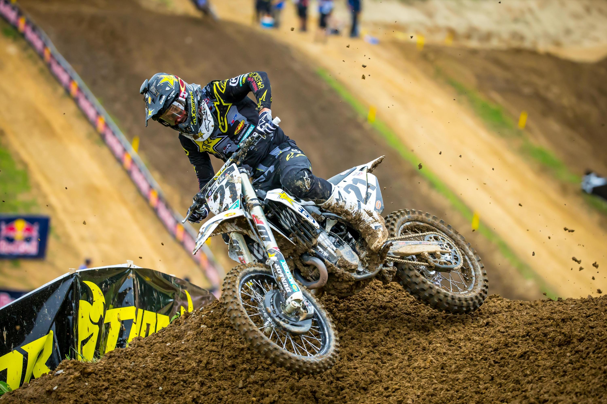
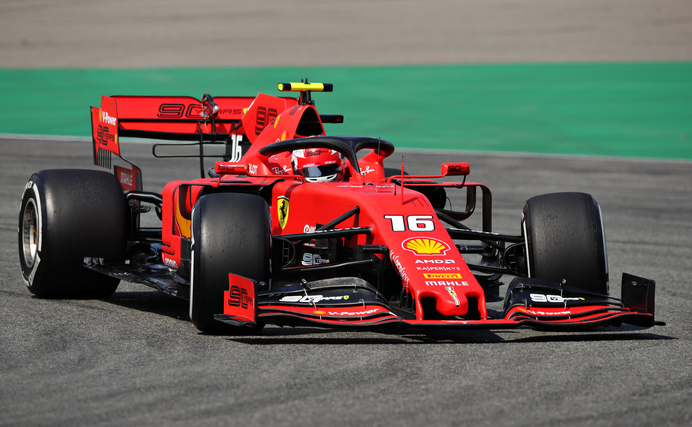
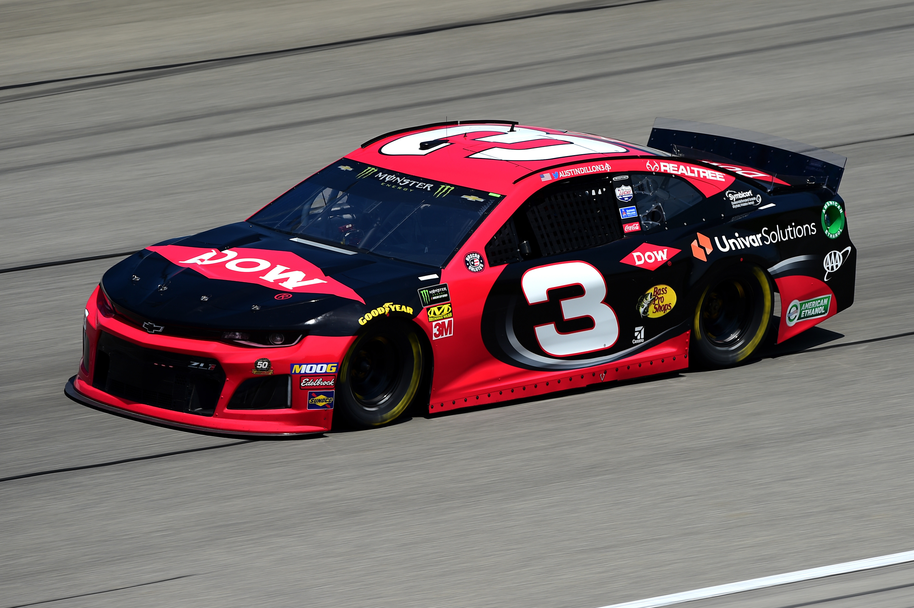

WELCOME TO MY WEBSITE
Selamat datang di website saya, di dalam website ini saya akan memperkenal kan beberapa balapan motor ataupun mobil yang mungkin anda ketahui, karena saya mengambil beberapa balapan yang paling terkenal dan banyak diketahui. Balap sepeda motor adalah olahraga otomotif yang menggunakan sepeda motor. Balap motor, khususnya road race, cukup populer di Indonesia. Hampir tiap minggu di berbagai daerah di Indonesia even balap motor diselenggarakan. Selain road race, balap motor jenis lain yang cukup sering diadakan adalah motocross, drag bike, grasstrack, Superbike dan Supersport. Terdapat beragam jenis olahraga yang menggunakan sarana motor balap. Fédération Internationale de Motocyclisme (FIM) adalah badan Internasional yang berfungsi menaungi berbagai jenis kegiatan-kegiatan olahraga balap motor tersebut. Balap mobil (bahasa Inggris: auto racing) adalah suatu cabang olahraga yang melibatkan kendaraan. Balap mobil merupakan salah satu cabang olahraga tontonan yang paling diminati dan juga yang paling dikomersialisasi. Balap mobil pertama kali muncul pada tahun 1895,[1] dan kini menjadi salah satu olahraga paling populer di dunia. Untuk melangsungkan balap mobil diperlukan suatu tempat khusus. Pada umumnya tempat untuk balap mobil dinamakan sirkuit. Sirkuit membedakan jenis balap mobil apa yang akan digelar. Tiap sirkuit memiliki karakterisktik yang berbeda tergantung pembuatnya. Misalnya Daytona untuk mobil stock, Le Mans untuk mobil sport, dan Monaco untuk mobil formula. Tetapi, ada pula balap mobil yang tak membutuhkan tempat khusus seperti sirkuit, yaitu reli. Ketrampilan pembalap dalam mengemudikan mobil balap menjadi titik penentu keberhasilan untuk mencapai kemenangan. Ada banyak sekali disiplin dan seri yang berbeda, masing-masing dengan regulasi dan peraturan yang berbeda.
Moto GP
Kejuaraan Dunia MotoGP atau kerap disebut sebagai MotoGP saja atau nama resminya FIM MotoGP World Championship adalah kelas utama dari seri balapan Grand Prix Sepeda Motor. Dulunya kelas ini dikenal dengan nama kelas 500cc atau biasa disebut GP500 yang pertama kali digelar sejak musim 1949. Adapun untuk kelas MotoGP yang kita kenal saat ini awal mulanya berakar dari perubahan regulasi untuk kelas 500cc di musim 2002 yang sering disebut juga sebagai tahun transisi. Musim 2002 menjadi periode terakhir mesin dua langkah diperlombakan dalam kompetisi kelas premier. Sepanjang tahun 2002 sampai 2006 untuk pertama kalinya pabrikan diizinkan untuk memperbesar kapasitas total mesin khusus untuk mesin 4 tak menjadi maksimum 990 cc, dan berubah menjadi 800 cc di musim 2007. Pabrikan juga diberi kebebasan untuk memilih jumlah silinder yang digunakan antara tiga sampai enam dengan batas berat tertentu. Dengan dibolehkannya motor 4 tak berkubikasi mesin besar tersebut, kelas GP500 diubah namanya menjadi MotoGP. Seluruh tim pabrikan seperti Yamaha, Honda, dan Suzuki masing-masing memilih untuk berkompetisi menggunakan mesin empat langkah terbarunya. Praktis hanya tim satelit saja yang masih berkompetisi menggunakan mesin 500 cc dua langkah dan itupun dengan penampilan yang sangat kedodoran.Sejak musim 2012, kapasitas mesin sepeda motor kembali dinaikan menjadi maksimal 1000cc.
WSBK
Kejuaraan Dunia Superbike atau bernama resmi FIM MOTUL World Superbike Championship (untuk alasan sponsorship), biasa disingkat dengan nama WSBK, SBK atau Superbike saja, merupakan kejuaraan utama balap motor superbike di dunia. Kejuaraan ini dimulai pada tahun 1988. Satu musim SBK terdiri dari rangkaian ronde yang diadakan di fasilitas balap permanen, setiap ronde terdiri dari dua kali balapan. Sepeda motor yang dipakai pada kejuaraan ini merupakan sepeda motor pabrikan yang tersedia di pasaran, yang dimodifikasi. Berbeda dengan MotoGP, yang menggunakan sepeda motor yang dibuat khusus (prototype) untuk para awam balap motor. Eropa merupakan lokasi dan pasar utama kejuaran SBK. Namun beberapa ronde juga diadakan di Jepang, Australia, Qatar dan Australia. Pada tahun 2008, kejuaraan ini akan diadakan di Amerika Serikat untuk pertama kalinya sejak tahun 2004. Satu ronde kejuaraan ini juga pernah direncanakan untuk diadakan di Indonesia, tetapi kemudian dibatalkan oleh Fédération Internationale de Motocyclisme. Kejuaraan ini di bawah regulasi FIM, yang merupakan badan internasional balap motor dan dikelola oleh FGSport. Pada tahun 2007 dan 2008 FGSport menjadi bagian dari Infront Group sehingga namanya berubah menjadi Infront Motor Sports. Pada kejuaraan tahun 2013 diambil alih oleh Dorna.
Motocross
Motocross adalah bentuk perlombaan atau kejuaraan balap motor yang digelar di sirkuit tanah. Olahraga ini berevolusi dari kompetisi uji coba sepeda motor di Inggris. Nama motocross diambil dari penggabungan kata yang berasal dari Prancis untuk motorcycle, motocyclette, atau singkatnya moto, dan cross country, atau lintas alam. Pada awalnya ajang motocross bermula dari sebuah kompetisi uji coba, seperti uji coba kuartalan Auto-Cycle Clubs yang digelar pada tahun 1909 dan Scottish Six Days Trial yang dimulai pada tahun 1912. Akan tetapi lambat laun event uji coba ini justru menjadi sebuah kompetisi untuk mencari siapa yang tercepat menyentuh garis finis
Formula 1
Formula Satu, disingkat F1 (atau bernama lengkap FIA Formula One World Championship), adalah kelas tertinggi balap mobil kursi tunggal yang diatur oleh Federasi Otomotif Internasional (FIA) dan dimiliki oleh Formula One Group. Kata formula di "Formula Satu" mengacu pada peraturan dan regulasi yang harus diikuti semua peserta. Formula Satu terdiri dari sejumlah seri balapan yang dikenal dengan istilah Grand Prix. Balapan-balapan tersebut diselenggarakan di dalam sirkuit atau jalan umum dalam kota yang ditutup untuk umum Hasil setiap balapan dihitung menggunakan sistem poin untuk menentukan dua gelar juara dunia: satu untuk pembalap, dan satu lagi untuk konstruktor. Setiap balapan harus mempunyai Super Licence, kelas izin balapan paling tinggi yang diberikan oleh FIA. Balapan-balapan F1 harus diselenggarakan di sirkuit berperingkat "1" (dulu "A"), yang merupakan peringkat sirkuit tertinggi dalam sistem peringkat FIA. Mobil Formula Satu adalah mobil balap tercepat di dunia, karena kecepatan menikung yang tinggi yang dihasilkan oleh aerodinamika gaya turun yang besar. Di tahun 2017 ada perubahan regulasi yang besar yang memperbolehkan sayap depan, sayap belakang, dan ban yang lebih lebar. Perubahan ini memungkinkan gaya menikung mencapai 6.5 g dan kecepatan maksimal yang diperkirakan mencapai 360 km/h.[5] Per 2019, putaran mesin hibrid dibatasi sekitar 15.000 rpm. Sistem kontrol traksi dan bantuan elektronik lainnya dilarang digunakan di Formula Satu sejak 2008. Meski Eropa adalah pusat tradisi Formula Satu, kejuaraan ini digelar di seluruh penjuru dunia, dengan 12 dari 23 balapan di musim 2021 digelar di luar Eropa.
Rally

Reli adalah olahraga otomotif yang menggunakan mobil reli. Balap reli, khususnya World Rally Championship lebih populer di dunia. World Rally Championship ini diselenggarakan tiap bulan oleh FIA. Jenis jalanan tipe reli yang diselenggarakan adalah jenis aspal, salju, kerikil, dan lumpur.
Nascar
National Association for Stock Car Auto Racing (dalam bahasa Indonesia: Asosiasi Nasional Balap Mobil Stok) atau biasa disingkat dengan akronim NASCAR merupakan perusahaan keluarga yang menyelenggarakan berbagai macam acara balapan. Perusahaan ini didirikan oleh Bill France, Sr. pada 1948. Saat ini NASCAR merupakan promotor penyelenggara balap mobil terbesar di Amerika Serikat. Tiga seri balapan terbesar NASCAR ialah Seri Piala, Seri Xfinity, dan Seri Truk. NASCAR menyetujui lebih dari 1.500 balapan di 100 trek di 38 negara bagian di Amerika Serikat. Selain itu NASCAR juga mengoperasikan seri tersendiri di Eropa, Kanada dan Meksiko. NASCAR juga sempat mengadakan beberapa balapan eksibisi di Suzuka, Jepang, Motegi, Jepang, dan Calder Park Raceway, Australia. Kantor pusat NASCAR berada di Daytona Beach, Florida termasuk juga kantor-kantor cabang lainnya di tiga kota di negara bagian Carolina Utara: Charlotte, Concord, dan Conover Kantor regionalnya berada di New York City dan Los Angeles. Untuk kantor di luar Amerika terletak di Mexico City dan Toronto. NASCAR merupakan salah satu dari olahraga yang paling banyak ditonton berdasarkan rating televisi di Amerika Serikat. Di luar Amerika, NASCAR disiarkan di lebih dari 150 negara di dunia. Pada tahun 2004, direktur keamanan NASCAR menyatakan NASCAR berada di urutan ke-17 dari 20 acara olahraga rutin mingguan yang dihadiri penonton setiap musimnya. Majalah Fortune menyatakan aliran uang sponsorship perusahaan yang mengalir di NASCAR melebihi ajang balapan lainnya seperti Formula Satu atau MotoGP, meskipun sejak Serangan 11 September 2001 yang berdampak langsung pada perekonomian di Amerika Serikat, beberapa perusahaan mulai mengurangi kegiatan sponsor mereka di ajang olahraga.
Profile

Muchammad Daffa Abdulloh - 10121120
IF-3